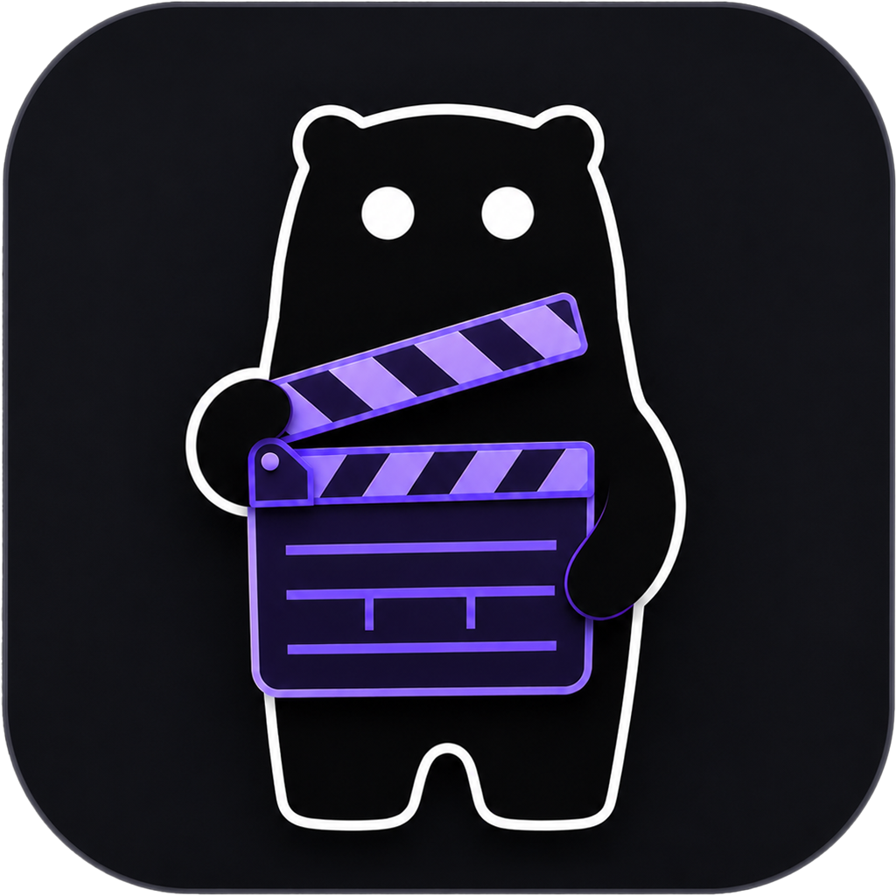
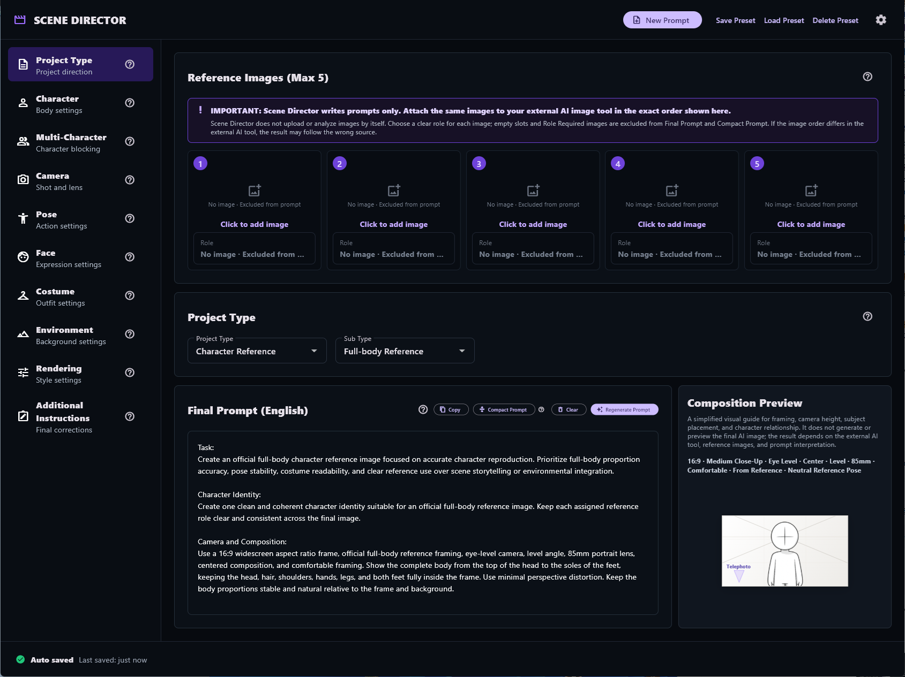
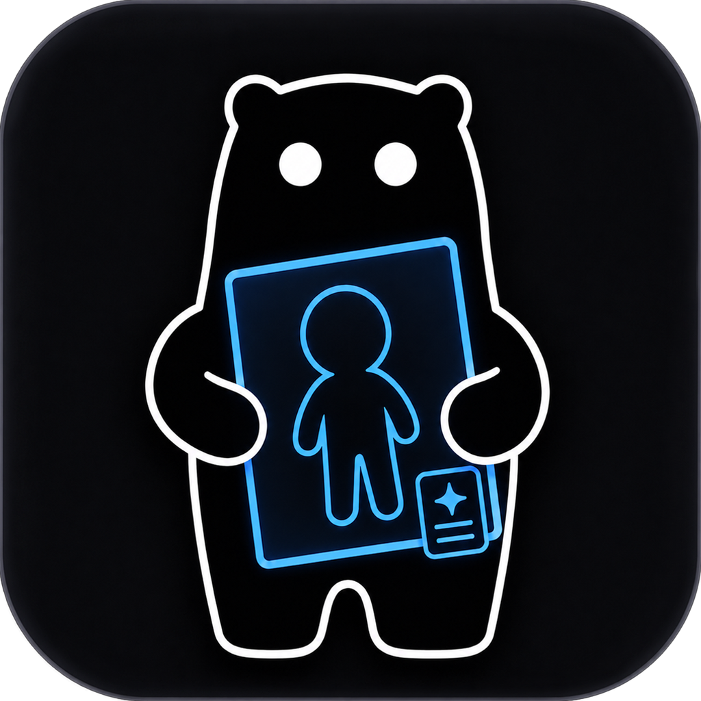
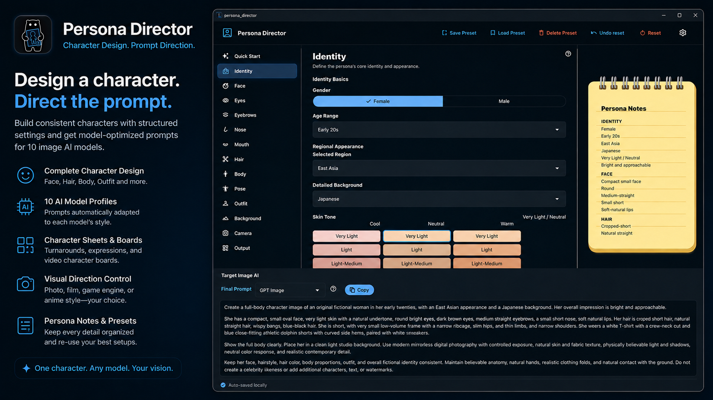

Öne çıkan ürün
Scene Director
Yapılandırılmış image-to-image istemleri oluşturmak için yaratıcı yönlendirme aracı.
Scene Director'ı keşfedin
URSUS Loft, yaratıcı ve profesyonel çalışmalar için pratik ve amaca yönelik araçlar geliştiren bağımsız bir yazılım stüdyosudur.
Neler geliştiriyoruz

Öne çıkan ürün
Yapılandırılmış image-to-image istemleri oluşturmak için yaratıcı yönlendirme aracı.
Scene Director'ı keşfedin

Şimdi kullanılabilir
Tutarlı kurgusal karakterler oluşturmak için yerel karakter tasarımı ve istem oluşturma aracı.
Persona Director'ı keşfedin
Yaklaşımımız
URSUS Loft, yaratıcı ve profesyonel çalışmalar için açıklık, kullanılabilirlik ve uzun vadeli fayda odağında araçlar geliştirir.
Arayüzler ve iş akışları anlaşılır kalacak şekilde düzenlenir.
Her ürün pratik bir iş akışı veya sorunla başlar.
Gereksiz karmaşıklık yerine güvenilir araçları tercih ederiz.